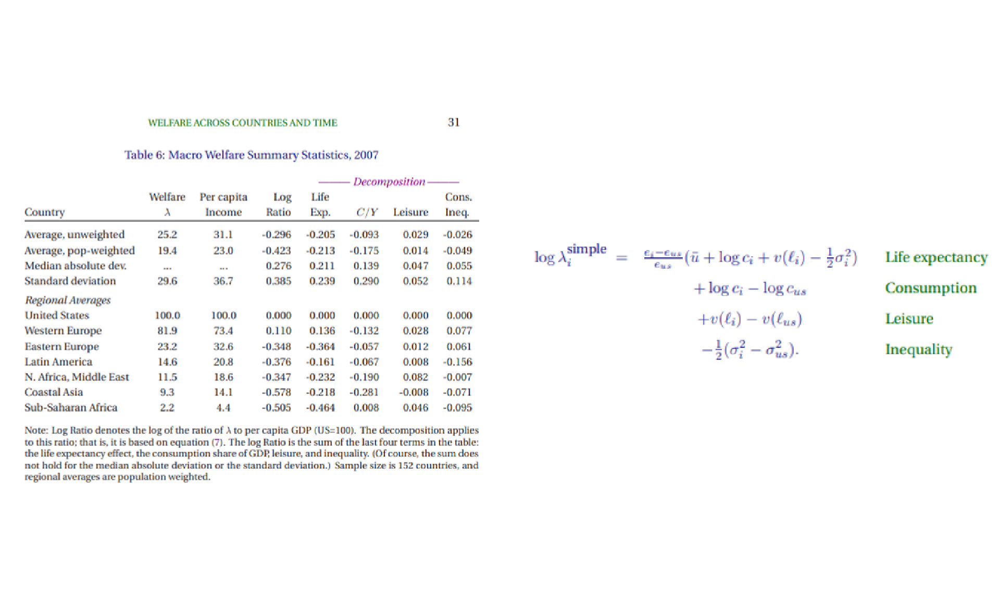
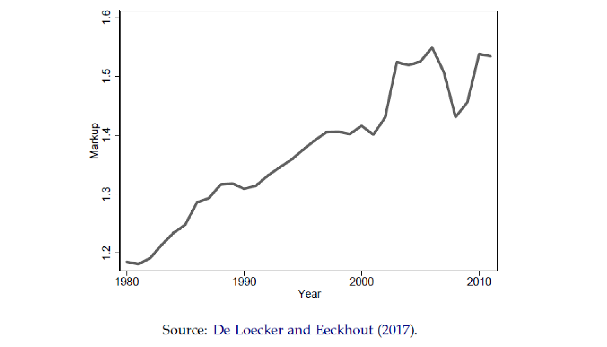
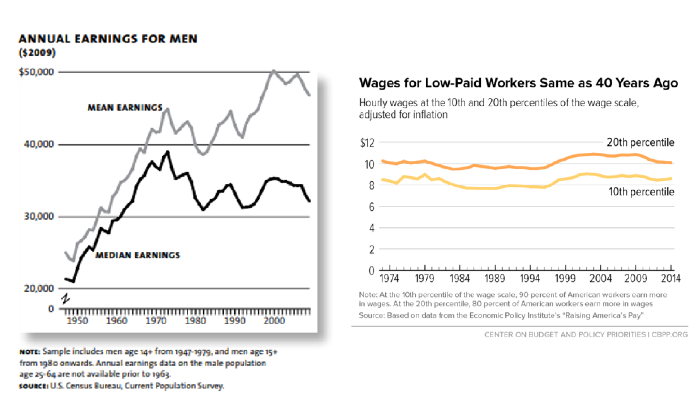
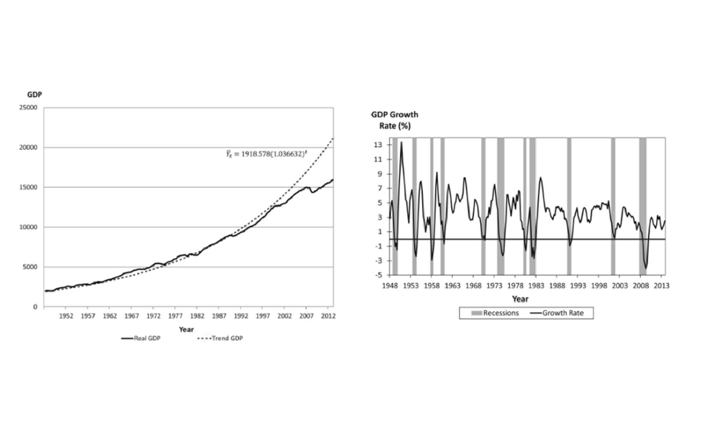
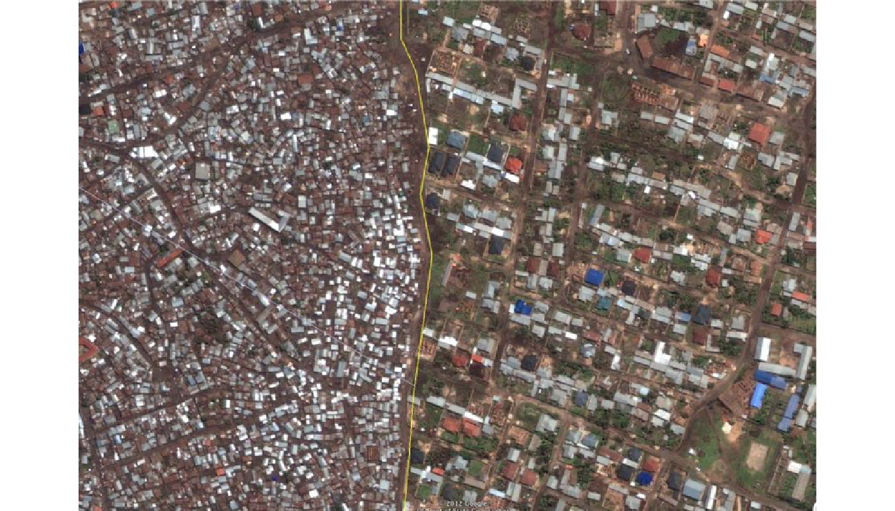

Crecimiento Económico
Crecimiento Económico | Introducción al curso
Crecimiento Económico
Agenda
Introducción al curso
- Objetivo del curso
- Temario
- Material
- Calificación
- Reglas
Introducción al crecimiento económico
- Medición del crecimiento económico
- Disparidades en el ingreso entre países
- Factores que potencialmente determinan el crecimiento económico
- Relación entre factores
Crecimiento Económico
| Tema | Descripción |
|---|---|
| Introducción a la teoría moderna del crecimiento económico |
Factores que propician el crecimiento económico (y el estancamiento del
PIB) Patrones de convergencia Efecto de políticas en la tasa de crecimiento de largo plazo |
| Desarollo de los modelos de crecimiento |
Modelos de crecimiento exógeno Modelos de crecimiento endógeno * Supuestos y fundamentos * Optimización * Transiciones al estado estacionario |
| Teoría y análisis de datos |
Hechos estilizados del crecimiento Teoría neoclásica y moderna Pronósticos Tendencias Patrones de crecimiento |
| Tópicos de crecimiento económico | Factores específicos potencialmente relevantes para explicar el crecimiento económico de un país |
Primera parte del curso
La primera parte del curso trata de desarrollar los hechos del crecimiento económico y los principales modelos para comprender esos hechos.
Este marco se utilizará para analizar una serie de preguntas más específicas relacionadas con el crecimiento y su interacción con otras áreas de la economía:
¿Somos pobres, ricos, o estamos en camino a serlo?
¿Cuáles son los factores fundamentales del crecimiento económico?
¿Cuáles serán las tasas de crecimiento si los factores fundamentales tienen una evolución constante y predecible?
¿Qué tasas de crecimiento son alcanzables en el largo plazo?
¿Qué aplicaciones tiene el análisis? - ¿Cómo impulsar el crecimiento a largo plazo (en términos de los fundamentales)?
Primera parte del curso
¿Qué preguntas NO se contestarán?:
¿Qué tasas de crecimiento ocurrirán en el largo plazo? - En el largo plazo, el crecimiento económico es muy dificil (imposible) de pronosticar.
¿Cuáles serán las trayectorias de crecimiento en el corto plazo? - No se analiza la demanda en los modelos de crecimiento económico - Hay otros modelos (con otros objetivos) para esto.
¿Qué políticas específicas impulsan el crecimiento económico? - Dependen del contexto del país y es dificil aislar el efecto de políticas.
Preliminares matemáticos
Se adjunta en comunidad una Nota sobre algunas herramientas matemáticas necesarias para estudiar el crecimiento, incluyendo lo siguiente:
Niveles y tasas de crecimiento
Logaritmos y porcentajes
Logaritmos, diferencias de logaritmos y pendientes
Cálculo de tasas de crecimiento
Este material es sólo una referencia por si necesitan reforzar el álgebra y cálculo básico, o si no se sienten cómodos con el funcionamiento de los logaritmos y exponentes.
Medición del PIB
Como prerequisito del curso, es necesario saber como se mide el PIB real, el indicador clave de la actividad económica.
Hay muchos problemas no triviales con la medición del PIB, y en particular con la comparación del PIB en diferentes períodos de tiempo o en diferentes países, incluyendo:
Dos bienes y dos períodos de tiempo.
Muchos bienes
PIB real en el tiempo
PIB real entre países
PIB per cápita
Estándares de vida
Comparaciones con el pasado.
La Nota en CANVAS sobre medición del PIB da un repaso general sobre estos temas.
Medición del PIB
Medido mediante cambios en el PIB per cápita – medible y objetivo.
Es un buen proxi del nivel de actividad económica.
Limitaciones técnicas:
No necesariamente refleja incrementos en el nivel del estándar de vida (salarios pueden caer como proporción del PIB / crecimiento poblacional afecta al indicador).
El proceso de destrucción creativa y transformaciones estructurales crea tensiones sociales (generalmente crea ganadores y perdedores).
No mide toda la actividad económica.
Otras: difícil de medir y actualizar.
Teorema de imposibilidad de Arrow: No se pueden modelar las preferencias agregadas sin violar alguno de los principios de transitividad, eficiencia o exclusión.
Medición del PIB

Expectativa de vida
- Los países que tienen un mayor PIB per cápita también tienden a tener una mayor esperanza de vida: los países más ricos pueden proporcionar una mejor atención médica y los países más saludables también pueden producir más bienes y servicios.
Mortalidad infantil
- Un mayor PIB per cápita también se asocia con menores tasas de mortalidad, particularmente entre los niños.
Crecimiento Poblacional
- A medida que los países se hacen más ricos, parecen favorecer invertir más en cada niño y menos en invertir en tener más hijos.
Población urbana
- Los países más ricos tienden a ser más urbanos. Una parte importante de esto se debe a las innovaciones tecnológicas que permiten que cada vez menos personas satisfagan las necesidades alimentarias de la población.
Contaminación
- A medida que los países muy pobres se hacen más ricos, ven niveles más altos de contaminación del aire. Pero a medida que los países continúan enriqueciéndose, la contaminación del aire disminuye a medida que los países exigen cielos más limpios.
Emisiones de dióxido de carbono
- Las emisiones de CO2 parecen aumentar con el PIB per cápita, en línea con un mayor uso de energía en los países más ricos. Por lo tanto, una de las preocupaciones que rodean el mayor PIB per cápita en es que generará aún más emisiones de CO2.
Pobreza extrema
- Si nos centramos solo en la pobreza extrema, la proporción de personas que viven con menos de $ 1.90 por día, entonces hay una fuerte relación negativa del PIB per cápita y la pobreza.
Pobreza extrema: países / regiones con más de mil millones de habitantes
Pobreza extrema: países / regiones con más de mil millones de habitantes
Índice de hambre global
- Los países que tienen un mayor PIB per cápita tienen menos personas expuestas al hambre severa.
Obesidad
- Los países que tienen un mayor PIB per cápita tienen menos personas expuestas al hambre severa.
Número de horas trabajadas
- A medida que los países se han enriquecido, han traducido eso en una disminución en el número de horas que las personas trabajan por año.
“Hechos” del crecimiento
Este tema contiene una serie de cifras destinadas a establecer algunos de los hechos estilizados clave sobre el crecimiento económico.
Estilizado significa que estamos observando tendencias generales y que habrá excepciones por todas partes.
Cuando comencemos a construir modelos de cómo crece la economía, vamos a verificar que nuestros modelos tengan sentido preguntándoles si pueden replicar estos hechos estilizados clave.
Si no pueden, entonces probablemente hay algo mal con nuestro modelo.
Estos hechos estilizados son quizás el aspecto más importante del aprendizaje del crecimiento económico.
- Si no comprende lo que nos dicen los datos, entonces es irrelevante lo que su teoría favorita del crecimiento económico dice que debería ser cierta.
“Hechos” del crecimiento
Crecimiento estable
- La tasa de crecimiento del PIB per cápita en las economías desarrolladas parece ser estable a largo plazo.
“Hechos” del crecimiento
Estabilidad del crecimiento en periodos prolongados
- La divergencia entre regiones se produjo al mismo tiempo que varios países en el mundo “despegaron” y lograron un crecimiento económico sostenido.
“Hechos” del crecimiento
Convergencia y divergencia
- ¿La tasa de crecimiento es la responsable de la diferencia en el nivel de ingresos? No. Ya existía una brecha muy grande, por ejemplo, entre Estados Unidos, por un lado, e India y Nigeria, por el otro.
“Hechos” del crecimiento
Convergencia y divergencia
- Las diferencias en la tasa de crecimiento del PIB per cápita entre las economías desarrolladas parecen ser temporales.
Convergencia
- Tomando a los países pertenecientes a la OCDE nos arroja el siguiente resultado:

- Entre mayor PIB en 1960, menor tasa de crecimiento promedio en el periodo, lo que sí indica convergencia. ¿Porqué sucede esto?
Convergencia
- Los resultados muestran a todos los países distinguiendo a los de la OCDE:

Convergencia
Convergencia condicional e incondicional
No hay evidencia de convergencia (incondicional) en la distribución del ingreso mundial (de hecho, la evidencia sugiere cierta divergencia en los ingresos entre las naciones).
Pero existe cierta evidencia de convergencia condicional, lo que significa que la brecha de ingresos entre países que tienen características similares observables.
Esta última observación es relevante tanto para reconocer entre qué países ha ocurrido la divergencia económica como para determinar qué tipos de modelos debemos considerar para comprender el proceso de crecimiento económico y las diferencias en el desempeño económico entre las naciones.
Correlación con el crecimiento económico
¿Qué tipo de países crecen más rápidamente? ¿Qué características específicas de los países (incluidas sus políticas e instituciones) tienen un efecto causal en el crecimiento?
Los primeros candidatos son la inversión en infraestructura y el capital humano (educación).

Correlación con el crecimiento económico
Estos datos sugieren que los países que han crecido más rápido son típicamente aquellos que han invertido más en capital físico y humano.
Esto no implica que las inversiones en capital físico o humano sean las causas del crecimiento económico (aunque esperamos que de la teoría económica básica contribuyan al crecimiento).

Correlación con la inversión
“Hechos” del crecimiento: Países desarrollados
- Las participaciones en el consumo tienden a ser consistentes a lo largo del tiempo para los países desarrollados.
“Hechos” del crecimiento: Países desarrollados
- Para los países desarrollados, las participaciones de la inversión se encuentran en un rango entre 20 y 25%.
“Hechos” del crecimiento: Países desarrollados
- Durante las últimas décadas ha habido una tendencia de la relación W / Y a disminuir en la mayoría de estos países.
“Hechos” del crecimiento: Países desarrollados
“Hechos” del crecimiento: Países desarrollados
Existen tendencias diferentes entre los países, pero en su mayor parte la relación capital / producto se mantiene dentro de un rango de aproximadamente 3 a 4 durante décadas.
En su mayor parte, la proporción de la mano de obra en los costos tienden a mantenerse alrededor de 0.7-0.8 todo el tiempo.
“Hechos” del crecimiento: Países en desarrollo
- Para los países en desarrollo, las participaciones en el consumo son más inconsistentes.
“Hechos” del crecimiento: Países en desarrollo
- Para los países en desarrollo, estas participaciones son más inestables.
“Hechos” del crecimiento: Países en desarrollo
- Durante las últimas décadas ha habido una tendencia de la relación W / Y a disminuir en la mayoría de estos países.
“Hechos” del crecimiento: Países en desarrollo
- En los países en desarrollo, esta proporción de está entre .75 y .85.
“Hechos” del crecimiento: Países en desarrollo
- Con el grupo de países que están experimentando un crecimiento de recuperación, hay menos estabilidad involucrada.
Convergencia
Senda de crecimiento balanceado (Balanced Growth Path – BGP)
Una BGP, se define por una serie de hechos que se aproximan a los datos observados en países desarrollados. Se dice que un país se encuentra en una BGP si se cumplen las siguientes cuatro condiciones:
- La tasa de crecimiento del PIB per cápita (g) es estable
- La relación entre la formación bruta de capital y el PIB (I / Y) es estable
- La parte de los costos laborales (ϕL) es estable
- La relación capital / producto (K / Y) es estable
Entender el BGP es útil porque nos permite centrarnos en algunas regularidades clave en los datos.
- Cuando intentemos modelar la economía y cómo crece, vamos a querer que ese modelo reproduzca los resultados asociados con un BGP, porque los vemos en países que consideramos desarrollados.
- Además, queremos que este modelo ayude a explicar por qué los países que están “sin” un BGP en algún momento (como Corea del Sur, Alemania o Japón) terminan nuevamente “en” un BGP después de un período de tiempo.
- Finalmente, una vez que tengamos ese modelo, lo usaremos para predecir lo que podría suceder en lugares como Nigeria y China.
“Hechos” modernos del crecimiento
“Hechos” modernos del crecimiento
“Hechos” modernos del crecimiento
“Hechos” modernos del crecimiento
“Hechos” modernos del crecimiento
“Hechos” modernos del crecimiento

“Hechos” modernos del crecimiento

“Hechos” modernos del crecimiento

“Hechos” modernos del crecimiento

“Hechos” modernos del crecimiento

“Hechos” modernos del crecimiento
- ¿Hay una disminución de la BGP de EEUU?

Modelado

Modelado

Modelado
En cierto nivel, las causas fundamentales son los factores que nos permiten vincular las cuestiones del crecimiento económico con las preocupaciones del resto de las ciencias sociales y hacer preguntas sobre los roles de las políticas, las instituciones, la cultura y los factores ambientales exógenos.
A riesgo de simplificar en exceso los fenómenos complejos, podemos pensar en la siguiente lista de posibles causas del crecimiento económico:
| Tema | Descripción |
|---|---|
| Suerte | Existen caminos divergentes entre sociedades con oportunidades, preferencias y estructuras de mercado idénticas. |
| Diferencias geográficas | Entornos distintos afectan la productividad de los trabajadores, la disponibilidad de recursos naturales, ciertas restricciones en el comportamiento individual, etc. |
| Diferencias institucionales | Diferentes leyes y regulaciones según las cuales los individuos y las empresas funcionan y configuran los incentivos que tienen para la acumulación, la inversión y el comercio. |
| Diferencias culturales | Determinan los valores, preferencias y creencias de los individuos. |
Modelado
Analizando lo anterior, una conclusión rápida sugiere que, para desarrollar una mejor comprensión de las causas fundamentales del crecimiento económico, debemos observar las instituciones y políticas que afectan los incentivos de los individuos.
Entender las causas del crecimiento económico implica comprender el impacto de estas instituciones y políticas en los incentivos económicos y por qué han aumentado el crecimiento en ciertos países, pero no en otros.
Modelado
Algunos problemas con las mediciones institucionales comunes son:
Índices de las instituciones utilizados son intrínsecamente arbitrarios.
Simplemente cargan cualquier diferencia en el ingreso per cápita en esas variables categóricas (multicolinealidad).
Medidas institucionales generalmente miden los resultados, no las diferencias institucionales reales (problema de correlación).
Los tamaños de muestra pequeños, muchas veces en el rango de 50-70 países, eliminando la posibilidad de controlar por otras variables.
El sesgo de publicación, lo que significa que lo único que vemos en la literatura son los resultados estadísticamente significativos que se produjeron en el transcurso de la ejecución de todas las regresiones con diferentes especificaciones y medidas de las instituciones.
Modelado
En resumen, puede ser que las instituciones importen fundamentalmente para el crecimiento económico, pero la literatura empírica puede no evidenciarlo.
Para saber que medir se requiere una buena definición de “institución” y una buena teoría de cómo funcionan, surgen, colapsan o mutan. Así que terminamos arrojando cosas que suenan “institucionalizadas” a regresiones, sin saber lo que realmente estamos midiendo.
Empíricamente, lo mejor que puedo concluir es que las democracias de estilo occidental son diferentes de otro tipo de países.
Modelado
En este sentido, la cultura, la geografía y las instituciones:
Afectan la actividad económica a través de las elecciones que los agentes toman sobre cómo asignar recursos escasos (en este caso, las empresas con el empleo).
Si bien pueden ser un determinante fundamental de la actividad económica, esta actúa a través de factores como la acumulación de capital, la adopción de tecnología o las decisiones de participación en el mercado laboral (entre otros). Entonces, necesitamos describir cómo estos influyen en los factores.
Modelado
Las decisiones involucran algún tipo de problema de optimización:
Hay algunas restricciones presupuestarias y alguna función de utilidad
Las personas hacen lo mejor que pueden para maximizar la utilidad mientras se mantienen dentro de ese presupuesto.
En este caso, o bien la cultura, instituciones, etc, influye en las restricciones presupuestarias, o influye en la función de utilidad.
- Por ejemplo, en el caso cultural, si los estadounidenses son más individualistas que los europeos, su función de utilidad estaría orientada hacia el ingreso individual, en comparación con los europeos en donde esta estaría orientada hacia ingresos comunales (más impuestos o seguridad social).
El modelado también es útil porque nos forza a ser explícitos en los supuestos, mecanismos y dinámicas que estemos diseñando.